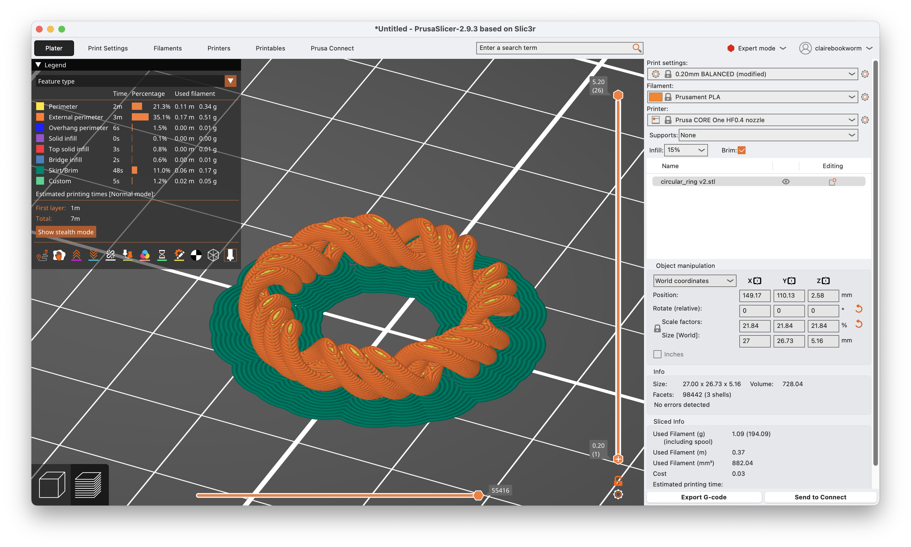
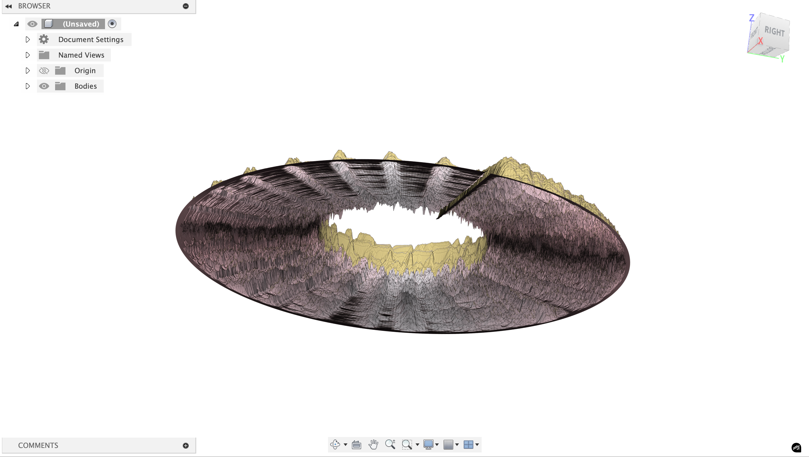
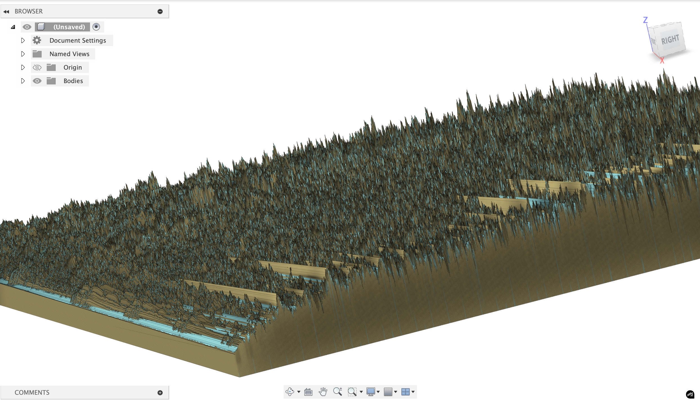
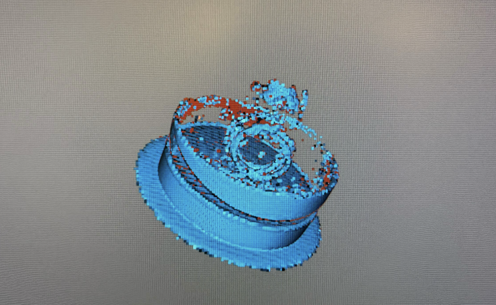

Week 4: 3D Scanning and Printing
The printer the EECS makerspace has is the Prusa Core One, an enclosed corexy machine.
It has a 250x220x270mm build volume and can hit 600mm/s print speeds. It also has auto bed leveling, filament runout detection, and power panic recovery. Corexy means the print head moves via belts in an xy coordinate system rather than the bed moving, which is much faster and has less vibration. The enclosure helps with abs/petg temperature stability and reduces warping.
Initial 3D Printing
I first 3D printed the concentric ring that I designed in week 2:

Here's a time-lapse of the printing process (it was just 7 minutes!). First, I sliced the model in Prusa Slicer, which generated the gcode for the printer. The filament is Prusament PLA and I used a HF0.4 nozzle and 15% infill. Since the ring doesn't have that much grip to the base, I enabled brim, which adds a single layer of extra material around the base of the print to help it stick to the bed.

Fidget Rings
Then, I wanted to print something with moving parts. This was a bit of challenge. There are fidget rings I've been buying to have something to tinker with, and i wanted to see if I could 3d print something like that. The first image is an example of what you can purchase online right now. In Fusion360, I made essentailly 2 rings, and turned the intersection of the rings into a component I used to cut away from the bodies. That cutaway is the gap between the two that allows the fidget ring to move. There were a few issues I ran into and I printed a few iterations to get it to work.


The first print used Snug supports and these were preventing the two rings from separating, because the supports also existed between the 2 rings in the gap. Using organic supports (the last image above) changed that issue. Unfortunately, the rings were still stuck togther. There's a few different ways to alter the shape of the ring to get it to move more easily, such as changing the shape of the moving ring to almost have a sort of chamfer join with the static ring.
Audio Sculptures
I'm really quite interested in interesting ways to interface with audio and signals. The idea behind this project is turning audio files into 3d sculptures and then (hopefully) decoding it using 3d scanning. There were some obvious issues with this idea (signals are just too granular to be able to both print and scan without losing a lot of the information), but I still think it's a really cool idea.
First, you need to do some pre-processing of the audio file that the user can upload:
Audio Preprocessing
- load audio file (wav/mp3)
- apply fft to get frequency domain data
- create spectrogram:
librosa.stft()gives you frequency bins over time - result: 2d array where
spectrogram[freq_bin][time_frame] = amplitude
I'm taking signal processing so this is strangely topical to what we're literally just covering:
Any song file is just a sequence of amplitude values over time - like [0.2, -0.1, 0.5, -0.3, ...] at 44.1khz sampling rate. this is the "time domain" - you can see when sounds happen but not what frequencies they contain.
FFT (Fast Fourier Transform): this is the mathematical magic that converts time→frequency. it takes a chunk of audio (say 2048 samples ≈ 46ms) and tells you "this chunk contains 200hz at 0.3 amplitude, 440hz at 0.8 amplitude, 1200hz at 0.1 amplitude" etc.
We need chunks because music changes over time - a guitar chord at second 5 has different frequencies than the drum hit at second 6. so we slide a window across the entire song, computing FFT for each window position. You can find the code to the encoder here.
Spectrogram creation: stack all these fft results together. now you have a 2d array where:
- x-axis = time (each column is one fft window)
- y-axis = frequency (each row is a frequency bin like "200-210hz")
- color/value = amplitude (how loud that frequency was at that time)
Spectrograms kind of look like heatmaps. This is the spectrogram for Hayley William's song Ice in my OJ (first 10 seconds):

Sculpture 2D to 3D
There is numpy-stl and trimesh that can generate and work with meshes in python. I made a quick website to allow anyone to upload a audio file and convert it to a 3d sculture. Find the repo here: https://github.com/ClaireBookworm/audio_sculpture, the Github Pages deployment is a bit finicky right now for it.

Here's an example of a audio sculpture that's generated in a helical structure. This is the breakdown of the algorithm I used:
t_parametric = (time / duration) × 4π // 2 full rotations
radius = base_radius + frequency_offset
x = radius × cos(t_parametric)
y = radius × sin(t_parametric)
z = t_parametric × pitch / (2π) // vertical progression
Time creates a helix (the spiraling staircase) and the frequency controls radial position and amplitude affects the thickness/displacement. The result is a DNA-like double helix structure that encodes the audio data in 3D space.



There's a bunch of other versions I created (Using Claude) that also look really cool but were too complex to 3d print (just like the above image). I also made a little webpage that takes in an audio file (wav/mp4) and processes a certain snippet of it to generated a 3d model.
The issue is that these are way too thin to be printed. With some tweaking (and getting Claude Sonnet 4 to formalize some of the math transform to expand the helical structure into 3d) I got a much more printable version. Here are three encodings of Chinatown by Bleachers at 10 seconds, 20 seconds, and 30 seconds.


Normally, the organic supports would be better, but in this case because of the thin and tilted nature of the sculpture, the organic supports surround my actual model and make it difficult to detach. The white version was a product of snug supports and the black version was a product of organic supports.


Decoding & Scanning
The encoder wraps around a radius of 15mm, so the decoder looks for the densest region of vertices at that distance from the origin in each horizontal slice, which is centerline extraction. Then we do a thickness measurement (thickness = min_thickness + amplitude * thickness_range). Next, we do temporal reconstruction and audio synthesis, where the decoder creates a simple audio signal by modulating sine waves with the recovered amplitudes. This won’t perfectly recreate the original song but will capture the energy envelope.
Scanner resolution: most consumer 3d scanners have ~0.1-0.5mm precision, which is marginal for your 2-8mm thickness range. you'll need good calibration.
Noise handling: real scans have gaps, outliers, and measurement errors. the decoder includes clustering algorithms (DBSCAN) to find the helix centerline even in noisy data.
Temporal resolution: your original audio has ~22k samples/second, but scanner measurements give maybe 100-500 points total. the decoder interpolates between these.
Without hte Caesar head, the scanner was not able to resolve the details or even process the rotation, even though the sculpture is not perfectly radially symmetric. Clearly this isn't the best scan, but we'll work with it.


Now, we must load this into Meshmixer (made by Autodesk) to fix the mesh and programmaticaly decode using the same algorithm as the encoder. You can find the code to the decoder here.


Here's the decoded audio:
Definitely not at all like the original song, but it's a fun experiment and it's really cool to see the audio data encoded in the 3d model.
Pokemon Go?
This project is a bit premature, but I 3d printed a bunch of pokemon figurines from Thingiverse to use the iPhone 3D scanner apps to allow a way to play real-world Pokemon Go.

They were pretty easy to print, and since I didn't design them, it was definitely very simple. I tried various iphone scanning apps, and the best option was Polycam.

Additional Reference:
Here's some of what we worked on for the group project. The presentation and stuff are on the website!

Materials:
- PVA: polyvinyl alcohol. Dissolves in water; you can print model in normal plastic and supports in pva + dunk in water
- HIPS: high impact polystyrene. It dissolves in limonen (citrus solvent), its much cheaper than PVA.
- ABS: what lego is made of, strong and heat resistance but shrinks as it cools so it warps and cracks without an enclosure. Acetone-weldable
- ASA: basically outdoor abs, uv-stable. mostly the same properties but won't degrade in sunlight
- PC: polycarbonate, bulletproof glass material. It's incredibly tough, heat resistant to ~140C, but needs ~300C nozzle temps
- PETG: like pla's stronger cousin. easier to print than abs, stronger than pla, clear variants available. good middle ground
- PLA: prints easy, biodegradable, but melts in a hot car.
Notes:
j55 prime 3d print - inkjet prints droplets of colored material
hangprinter - anchor in the room and it hands down to print things
- STL: list of triangles, has no units
- PLY: a bit better
- AMF / 3MF: color format that prints can learn to use
- G-code: The low-level programming language used to control 3D printers and CNC machines; it specifies movement, temperature, and other instructions.
- Blender: A powerful open-source 3D modeling software; supports texture mapping, sculpting, animation, and more.
- MeshLab: A tool for viewing, editing, and cleaning 3D mesh files; useful for preparing models for printing.
- Slicing software: Converts 3D models into layers and generates G-code for printers; examples include PrusaSlicer, Cura, and Simplify3D.
- Firmware: Embedded software running on the printer's hardware; manages motion, temperature, and safety features.
- model-viewer: A web component that lets you embed interactive 3D models in web pages.
- Photogrammetry: Technique that reconstructs 3D objects by analyzing multiple photos taken from different angles; can be done with a smartphone.
- Speckle pattern scanning: Projects a random dot pattern onto an object and tracks dot movement to capture surface geometry.
- Ferret Pro: A stereo vision system that uses two cameras to capture depth information for 3D scanning.
- Anisotropic: varying properties based on direction. For example, wood is stronger along the grain than across it. (Some printing material is like this when you build supports.)